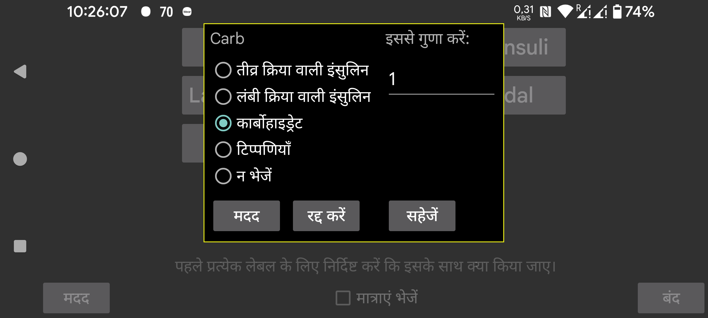

ar be de es fr hi it ja nl pl pt ru tr uk uz zh en
Libreview के लिए उसी तरह, आप यह भी निर्दिष्ट कर सकते हैं कि Juggluco में Nightscout सर्वर के माध्यम से मात्राओं का प्रतिनिधित्व कैसे करें।
चुनें कि Juggluco में एक विशेष लेबल के तहत दर्ज की गई मात्राएं Libreview को कैसे भेजी जानी चाहिए। समान Libreview लेबल के साथ एक से अधिक प्रकार की मात्रा भेजना संभव है। उदाहरण के लिए यदि आप Juggluco में अलग-अलग लेबल के तहत कार्बोहाइड्रेट और शुद्ध ग्लूकोज भोजन को दर्ज करते हैं, तो आप दोनों के लिए निर्दिष्ट कर सकते हैं कि उन्हें Libreview को कार्बोहाइड्रेट के रूप में भेजा जाना चाहिए।
कार्बोहाइड्रेट के लिए, Juggluco में दी गई मात्रा को एक निश्चित संख्या से गुणा करना संभव है ताकि आप अन्य इकाइयों को ग्राम में परिवर्तित कर सकें। यदि आप Juggluco में 10 ग्राम के सर्विंग्स में गिनते हैं, तो आप यहाँ 10 दर्ज कर सकते हैं, ताकि Libreview को ग्राम भेजे जाएं।
टिप्पणियाँ का मतलब है कि मात्रा Libreview को इस तरह भेजी जाती है जैसे आपने Librelink में टिप्पणियाँ जोड़ी हों। यदि आप यहाँ टिप्पणियाँ निर्दिष्ट करते हैं, तो लेबल और उस लेबल के लिए दर्ज की गई संख्या भेजी जाती है। उदाहरण के लिए: "Bike 50", यदि आपके पास एक लेबल "Bike" था और आपने उस लेबल के तहत "50" दर्ज किया। "Bike 50" को Libreview में निर्दिष्ट समय पर "Daily log" के ग्राफ़ के नीचे दिखाया जाएगा।